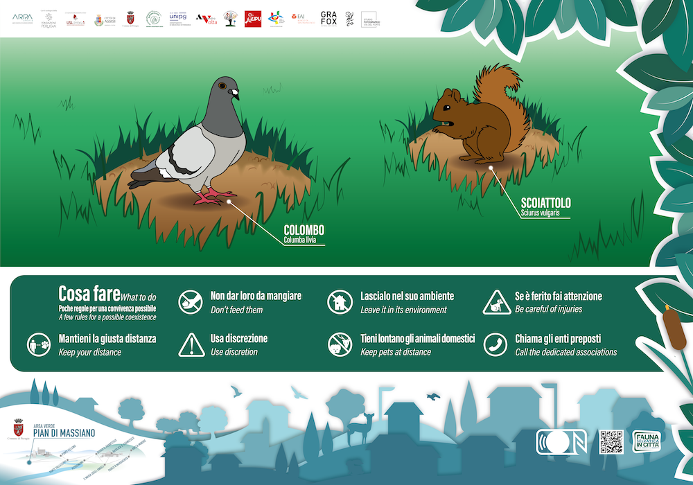
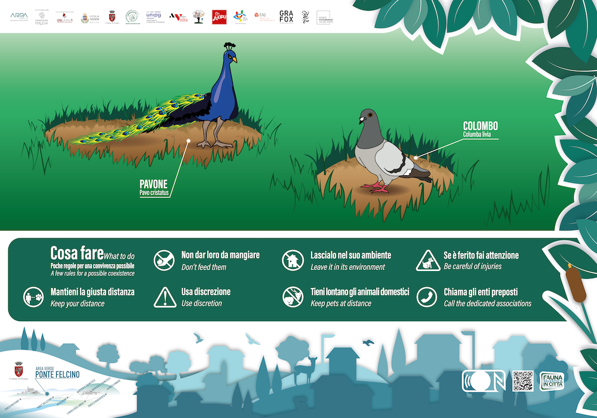
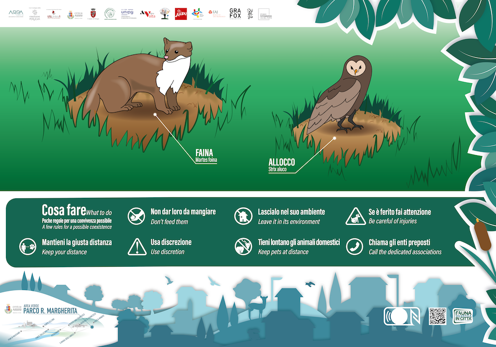
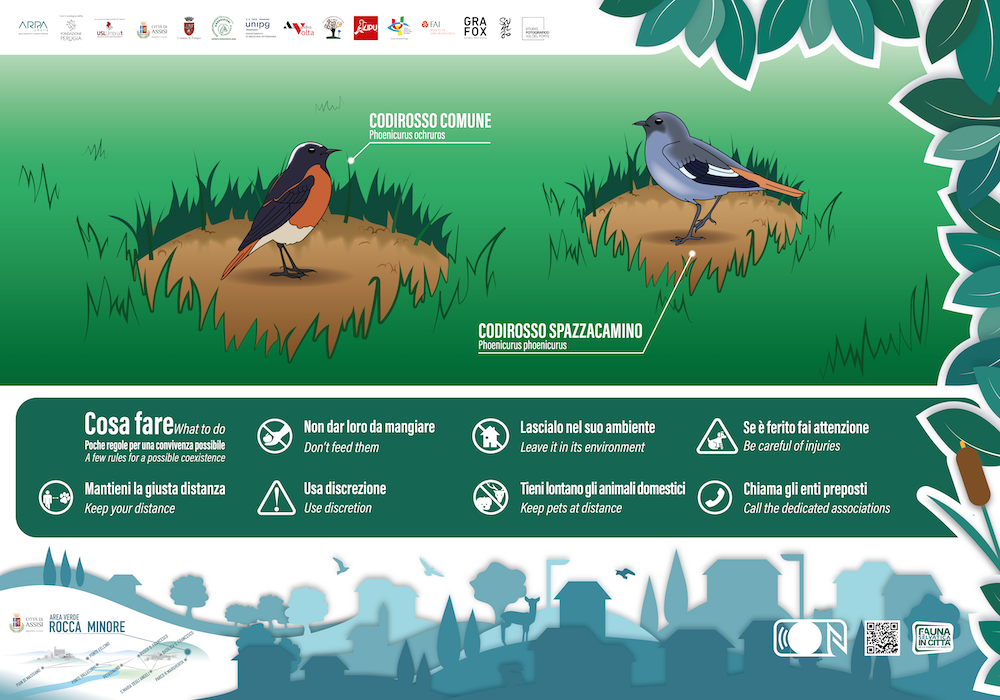
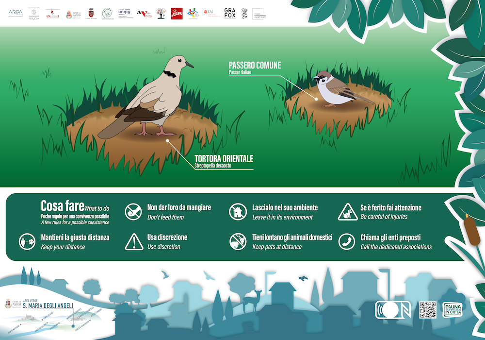
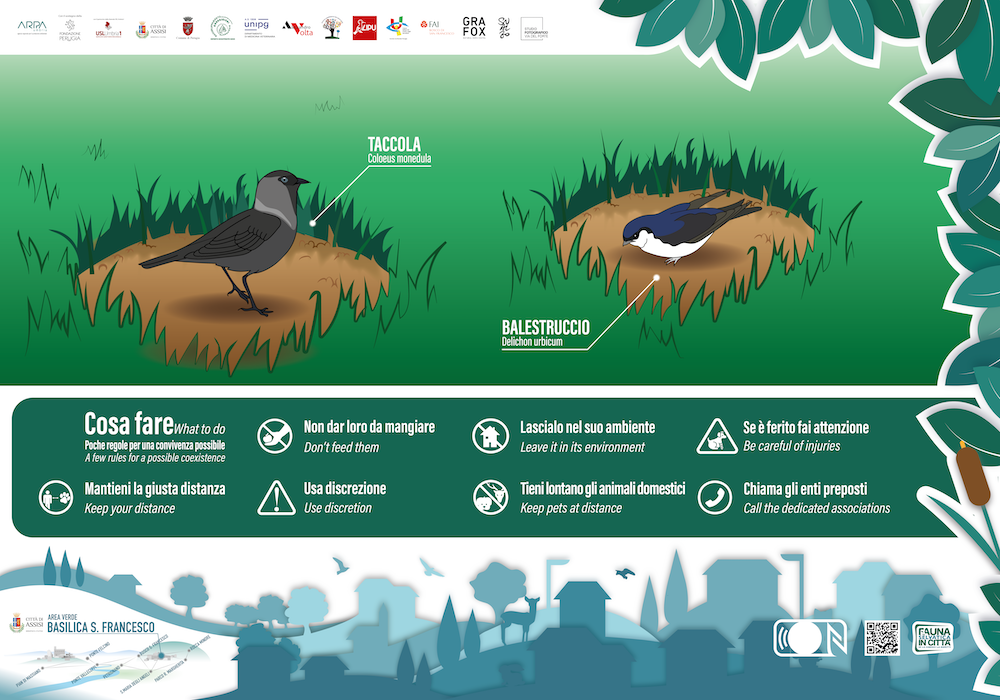

Le aree verdi sono spazi pubblici urbani e periurbani caratterizzati dalla presenza di vegetazione come i parchi, i giardini, i prati o i boschi. Forniscono molteplici benefici ambientali e sociali. Nell’ambito del progetto il Comune di Assisi e il Comune di Perugia hanno individuato specifiche aree di interesse, particolarmente frequentate dai cittadini, in cui avviare attività di sensibilizzazione e offrire informazioni giuste ed adeguate per migliorare il nostro rapporto con gli animali selvatici urbanizzati.
Comune di Perugia:
Il parco, inaugurato nel 1975, deve il suo nome originario alla zona di Pian di Massiano dove sorge. Questo ampio spazio, che occupa un’area di circa 70 ettari, ospita una pluralità di servizi tipici delle aree verdi che coniugano socialità, fitness, sport e svago. E’ quasi totalmente pianeggiante, tranne alcuni brevi tratti con pendenze varie. L’inserimento delle strutture ed infrastrutture è stato preceduto da un’attenta progettazione che ha voluto letteralmente immergerle nel verde. Il risultato è un grande parco urbano attrezzato con attenzione alla qualità dell’ambiente ed al benessere del fruitore: “barriere verdi” contro smog e rumore, aree di parcheggio ombreggiate ed attrezzate, percorsi pedonali dedicati allo sport o al recupero da patologie respiratorie. Anche la semplice passeggiata o la corsa lungo il torrente Genna, di cui si sono recuperate la vegetazione ripariale e l’alveo con tecniche di bioingegneria, possono rappresentare un momento di relax, di socializzazione o di svago. Le possibilità di fare sport sono poi praticamente infinite: i campi da calcio, da rugby, da baseball e da bocce, la pista di pattinaggio e da mountain bike, le aree attrezzate per i giochi dei più piccoli, e quelle per i cani in libertà.
E’ un’area naturalistico-ambientale di circa 4 ettari di proprietà comunale. La sua nascita, avvenuta nella seconda metà degli anni 90, si deve alla volontà del territorio di scopo di promuovere concetti naturalistici ed ecologici in generale e in particolare legati a piante e foreste e la conoscenza e la valorizzazione dell’ambiente vegetale. Sono presenti oltre 1.000 specie botaniche arboree, arbustive ed erbacee, una serra dedicata alle piante succulente (piante grasse), una agli agrumi, una grande serra a cupola con piante tropicali e un'altra con piante degli ambienti subtropicali, un roseto, un bosco planiziale e un bosco ripariale. Il Bosco Didattico quindi può essere letto da molteplici punti di vista: studio sulle caratteristiche delle piante, studio sulle utilità delle piante nelle varie attività umane (alimentazione e industria) e sulla loro funzione insostituibile nella vita del pianeta e nel ciclo della vita, studio delle tecniche colturali, studio di ogni essenza vegetale nelle sue caratteristiche ornamentali e decorative da impiegare nei giardini, nel verde attrezzato, nelle opere pubbliche e di come la vegetazione possa inserirsi nel contesto urbano, nei boschi, ecc. Legato intimamente al Bosco Didattico è il canale di adduzione di acqua da Villa Pitignano alla ex-Centrale idroelettrica di Ponte Felcino. Le sponde sono state opportunamente riambientate con vegetazione ripariale e il ripopolamento del canale è stato completato dall’immissione di pesci e di animali acquatici che oggi animano il suo corso. Il Bosco didattico sarà oggetto di intervento in numerosi settori di esso a valere sui fondi PNRR, tra cui la realizzazione di una nuova serra subtropicale riprendendo la struttura di protezione utilizzata per il restauro della Fontana Maggiore di Piazza 4 Novembre; il rifacimento totale della serra subtropicale esistente e la realizzazione di una nuova area dedicata agli animali garantendo la convivenza e le necessità di ognuno di essi.
Comune di Assisi:
Conosciuto anche come Parco Regina Margherita è accessibile tutti i giorni dalle 7 alle 19. Riqualificato e messo in sicurezza nel 2022, lo si trova nella parte alta della città, nel centro storico, vicino al famoso Convitto di Assisi. Parco antichissimo, posto su due livelli presenta all’ingresso, vicino ai 2 leoni con lo stemma della città di Assisi, l’anfiteatro all’aperto, mentre, salendo nella parte superiore attraverso viali di sassi immersi nel bosco, si giunge al piccolo lago.
Ai piedi della Basilica di San Francesco c’è un antico bosco dove natura, storia e spiritualità si
fondono in un
percorso alla scoperta di una Assisi inedita. 64 ettari di natura, tra terreni boschivi e campi
coltivati, pareti
di pietra rosa, radure e oliveti. Nell’area verde si possono trovare cascatelle e ovviamente un fitto
bosco,
con tavoli da pic-nic e percorsi per facili passeggiate. Un luogo di armonia e di silenzio capace di
rievocare il
messaggio di San Francesco che ha ispirato l’artista Michelangelo Pistoletto nella creazione di un’opera
di
Land Art: il Terzo Paradiso, simbolo di riconciliazione fra uomo e natura.
Il Bosco di San Francesco è una porzione intatta di paesaggio umbro strappato all’abbandono e al degrado
dal FAI – Fondo per l’Ambiente Italiano che, dopo la donazione da parte di Intesa Sanpaolo nel 2008,
l’ha
interamente restaurato, recuperato e riaperto al pubblico nel 2011. Un paesaggio storico-ambientale
tradizionale fortemente identitario e ricco di biodiversità, che il FAI ha recuperato, conservato e
valorizzato,
dove ha grande importanza la presenza degli oliveti oggi rimessi in produzione.
Molto vicina geograficamente alla Rocca Maggiore (un solo chilometro di distanza), un tempo anche collegate tra loro da una lunga muraglia percorribile sotto la quale si narra dell’esistenza di un percorso segreto, la Rocca Minore è conosciuta anche con il nome di Rocchicciola o di Cassero di Sant’Antonio. Da questo luogo partono diversi percorsi trekking per il Subasio. Sull’area, riconosciuta dall’Unesco come patrimonio dell’umanità, il Comune ha avviato progetti di rivalutazione turistica, culturale ed ambientale.
L’area verde prospiciente la Basilica di S. Maria degli Angeli costituisce un importante polmone verde della città. La Piazza della Porziuncola, principale via di accesso alla chiesa particolarmente frequentata dai pellegrini, è percorsa da diversi filari alberati costituiti soprattutto da lecci dove si rifugiano diverse specie di avifauna antropofila. È in questo luogo che si racconta nei Fioretti di San Francesco come il santo si fece donare da un giovane che andava al mercato per venderle, alcune tortore e le liberò. Gli uccelli si fermarono con lui, nidificando nei dintorni della chiesetta della Porziuncola e la tradizione vuole che le tortore che si vedono in questa area siano le discendenti di quegli uccelli liberati da Francesco.
Le estese pareti in pietra della Basilica di San Francesco, posta al limite occidentale della città di Assisi, rappresentano l’habitat antropico a cui si sono adattate le specie di avifauna, che solitamente in natura nidificano sulle pareti rocciose. Le alte mura, costruite con la classica pietra rosata del Monte Subasio, pur nella loro artificialità, richiamano nell’essenza del loro materiale costruttivo l’ambiente circostante. Inoltre la collocazione della Basilica su di uno sperone del terreno, la slancia nell’ambiente aereo, rendendo tale struttura particolarmente interessante come sito di nidificazione.
